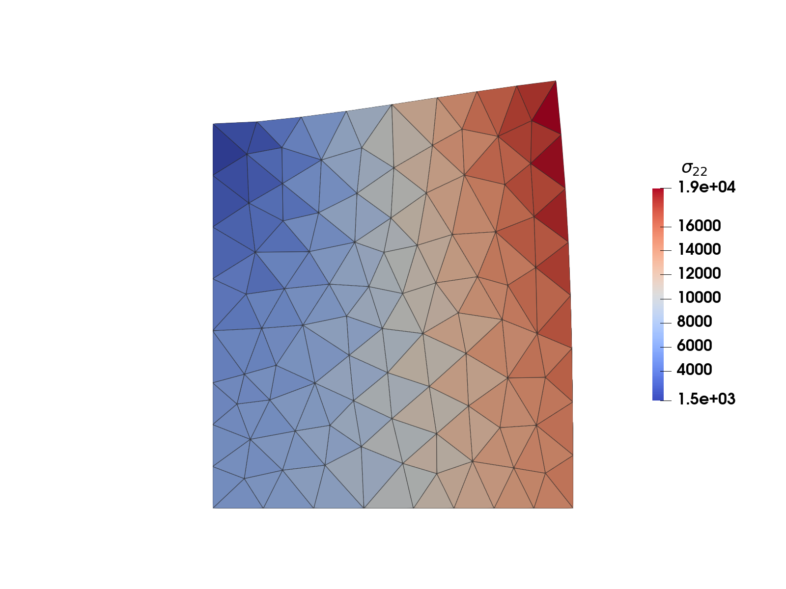
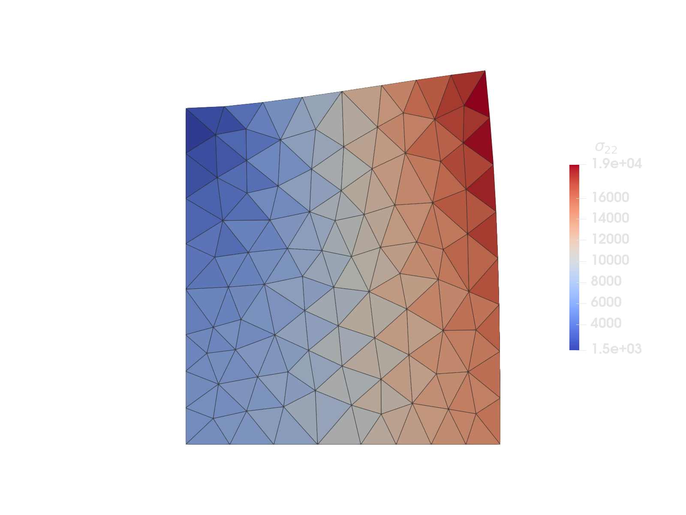
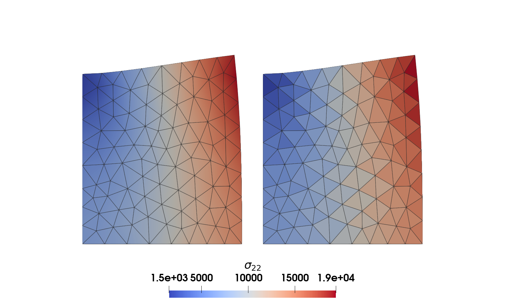
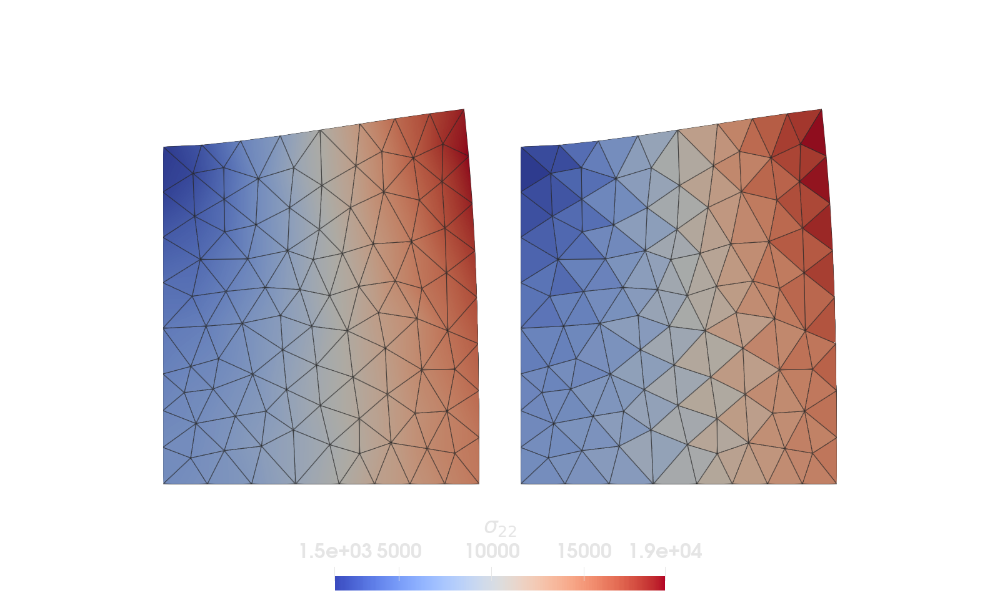

Linear elasticity


Figure 1: Vertical normal stress $\sigma_{22}$ (MPa) on the deformed geometry. The computational mesh is generated from the 1mm $\times$ 1mm Ferrite logo.
This tutorial is also available as a Jupyter notebook: linear_elasticity.ipynb.
Introduction
The classical first finite element problem to solve in solid mechanics is a linear balance of momentum problem. We will use this to introduce a vector valued field, the displacements $\boldsymbol{u}(\boldsymbol{x})$. In addition, some features of the Tensors.jl toolbox are demonstrated.
Strong form
The strong form of the balance of momentum for quasi-static loading is given by
\[\begin{alignat*}{2} \mathrm{div}(\boldsymbol{\sigma}) + \boldsymbol{b} &= 0 \quad &&\boldsymbol{x} \in \Omega \\ \boldsymbol{u} &= \boldsymbol{u}_\mathrm{D} \quad &&\boldsymbol{x} \in \Gamma_\mathrm{D} \\ \boldsymbol{n} \cdot \boldsymbol{\sigma} &= \boldsymbol{t}_\mathrm{N} \quad &&\boldsymbol{x} \in \Gamma_\mathrm{N} \end{alignat*}\]
where $\boldsymbol{\sigma}$ is the (Cauchy) stress tensor and $\boldsymbol{b}$ the body force. The domain, $\Omega$, has the boundary $\Gamma$, consisting of a Dirichlet part, $\Gamma_\mathrm{D}$, and a Neumann part, $\Gamma_\mathrm{N}$, with outward pointing normal vector $\boldsymbol{n}$. $\boldsymbol{u}_\mathrm{D}$ denotes prescribed displacements on $\Gamma_\mathrm{D}$, while $\boldsymbol{t}_\mathrm{N}$ the known tractions on $\Gamma_\mathrm{N}$.
In this tutorial, we use linear elasticity, such that
\[\boldsymbol{\sigma} = \mathsf{C} : \boldsymbol{\varepsilon}, \quad \boldsymbol{\varepsilon} = \left[\mathrm{grad}(\boldsymbol{u})\right]^\mathrm{sym}\]
where $\mathsf{C}$ is the 4th order elastic stiffness tensor and $\boldsymbol{\varepsilon}$ the small strain tensor. The colon, $:$, represents the double contraction, $\sigma_{ij} = \mathsf{C}_{ijkl} \varepsilon_{kl}$, and the superscript $\mathrm{sym}$ denotes the symmetric part.
Weak form
The resulting weak form is given as follows: Find $\boldsymbol{u} \in \mathbb{U}$ such that
\[\int_\Omega \mathrm{grad}(\delta \boldsymbol{u}) : \boldsymbol{\sigma} \, \mathrm{d}\Omega = \int_{\Gamma} \delta \boldsymbol{u} \cdot \boldsymbol{t} \, \mathrm{d}\Gamma + \int_\Omega \delta \boldsymbol{u} \cdot \boldsymbol{b} \, \mathrm{d}\Omega \quad \forall \, \delta \boldsymbol{u} \in \mathbb{T},\]
where $\mathbb{U}$ and $\mathbb{T}$ denote suitable trial and test function spaces. $\delta \boldsymbol{u}$ is a vector valued test function and $\boldsymbol{t} = \boldsymbol{\sigma}\cdot\boldsymbol{n}$ is the traction vector on the boundary. In this tutorial, we will neglect body forces (i.e. $\boldsymbol{b} = \boldsymbol{0}$) and the weak form reduces to
\[\int_\Omega \mathrm{grad}(\delta \boldsymbol{u}) : \boldsymbol{\sigma} \, \mathrm{d}\Omega = \int_{\Gamma} \delta \boldsymbol{u} \cdot \boldsymbol{t} \, \mathrm{d}\Gamma \,.\]
Finite element form
Finally, the finite element form is obtained by introducing the finite element shape functions. Since the displacement field, $\boldsymbol{u}$, is vector valued, we use vector valued shape functions $\delta\boldsymbol{N}_i$ and $\boldsymbol{N}_i$ to approximate the test and trial functions:
\[\boldsymbol{u} \approx \sum_{i=1}^N \boldsymbol{N}_i (\boldsymbol{x}) \, \hat{u}_i \qquad \delta \boldsymbol{u} \approx \sum_{i=1}^N \delta\boldsymbol{N}_i (\boldsymbol{x}) \, \delta \hat{u}_i\]
Here $N$ is the number of nodal variables, with $\hat{u}_i$ and $\delta\hat{u}_i$ representing the $i$-th nodal value. Using the Einstein summation convention, we can write this in short form as $\boldsymbol{u} \approx \boldsymbol{N}_i \, \hat{u}_i$ and $\delta\boldsymbol{u} \approx \delta\boldsymbol{N}_i \, \delta\hat{u}_i$.
Inserting these into the weak form, and noting that the equation should hold for all $\delta \hat{u}_i$, we get
\[\underbrace{\int_\Omega \mathrm{grad}(\delta \boldsymbol{N}_i) : \boldsymbol{\sigma}\ \mathrm{d}\Omega}_{f_i^\mathrm{int}} = \underbrace{\int_\Gamma \delta \boldsymbol{N}_i \cdot \boldsymbol{t}\ \mathrm{d}\Gamma}_{f_i^\mathrm{ext}}\]
Inserting the linear constitutive relationship, $\boldsymbol{\sigma} = \mathsf{C}:\boldsymbol{\varepsilon}$, in the internal force vector, $f_i^\mathrm{int}$, yields the linear equation
\[\underbrace{\left[\int_\Omega \mathrm{grad}(\delta \boldsymbol{N}_i) : \mathsf{C} : \left[\mathrm{grad}(\boldsymbol{N}_j)\right]^\mathrm{sym}\ \mathrm{d}\Omega\right]}_{K_{ij}}\ \hat{u}_j = f_i^\mathrm{ext}\]
Implementation
First we load Ferrite, and some other packages we need.
using Ferrite, FerriteGmsh, SparseArraysAs in the heat equation tutorial, we will use a unit square - but here we'll load the grid of the Ferrite logo! This is done by downloading logo.geo and loading it using FerriteGmsh.jl,
using Downloads: downloadlogo_mesh = "logo.geo"asset_url = "https://raw.githubusercontent.com/Ferrite-FEM/Ferrite.jl/gh-pages/assets/"isfile(logo_mesh) || download(string(asset_url, logo_mesh), logo_mesh)grid = togrid(logo_mesh);The generated grid lacks the facetsets for the boundaries, so we add them by using Ferrite's addfacetset!. It allows us to add facetsets to the grid based on coordinates. Note that approximate comparison to 0.0 doesn't work well, so we use a tolerance instead.
addfacetset!(grid, "top", x -> x[2] ≈ 1.0) # facets for which x[2] ≈ 1.0 for all nodesaddfacetset!(grid, "left", x -> abs(x[1]) < 1.0e-6)addfacetset!(grid, "bottom", x -> abs(x[2]) < 1.0e-6);Trial and test functions
In this tutorial, we use the same linear Lagrange shape functions to approximate both the test and trial spaces, i.e. $\delta\boldsymbol{N}_i = \boldsymbol{N}_i$. As our grid is composed of triangular elements, we need the Lagrange functions defined on a RefTriangle. All currently available interpolations can be found under Interpolation.
Here we use linear triangular elements (also called constant strain triangles). The vector valued shape functions are constructed by raising the interpolation to the power dim (the dimension) since the displacement field has one component in each spatial dimension.
dim = 2order = 1 # linear interpolationip = Lagrange{RefTriangle, order}()^dim; # vector valued interpolationIn order to evaluate the integrals, we need to specify the quadrature rules to use. Due to the linear interpolation, a single quadrature point suffices, both inside the cell and on the facet. In 2d, a facet is the edge of the element.
qr = QuadratureRule{RefTriangle}(1) # 1 quadrature pointfacet_qr = FacetQuadratureRule{RefTriangle}(1);Finally, we collect the interpolations and quadrature rules into the CellValues and FacetValues buffers, which we will later use to evaluate the integrals over the cells and facets.
cellvalues = CellValues(qr, ip)facetvalues = FacetValues(facet_qr, ip);Degrees of freedom
For distributing degrees of freedom, we define a DofHandler. The DofHandler knows that u has two degrees of freedom per node because we vectorized the interpolation above.
dh = DofHandler(grid)add!(dh, :u, ip)close!(dh);A common assumption is that the numbering of degrees of freedom follows the global numbering of the nodes in the grid. This is NOT the case in Ferrite. For more details, see the Ferrite numbering rules.
Boundary conditions
We set Dirichlet boundary conditions by fixing the motion normal to the bottom and left boundaries. The last argument to Dirichlet determines which components of the field should be constrained. If no argument is given, all components are constrained by default.
ch = ConstraintHandler(dh)add!(ch, Dirichlet(:u, getfacetset(grid, "bottom"), (x, t) -> 0.0, 2))add!(ch, Dirichlet(:u, getfacetset(grid, "left"), (x, t) -> 0.0, 1))close!(ch);In addition, we will use Neumann boundary conditions on the top surface, where we add a traction vector of the form
\[\boldsymbol{t}_\mathrm{N}(\boldsymbol{x}) = (20e3) x_1 \boldsymbol{e}_2\ \mathrm{N}/\mathrm{mm}^2\]
traction(x) = Vec(0.0, 20.0e3 * x[1]);On the right boundary, we don't do anything, resulting in a zero traction Neumann boundary. In order to assemble the external forces, $f_i^\mathrm{ext}$, we need to iterate over all facets in the relevant facetset. We do this by using the FacetIterator.
function assemble_external_forces!(f_ext, dh, facetset, facetvalues, prescribed_traction) # Create a temporary array for the facet's local contributions to the external force vector fe_ext = zeros(getnbasefunctions(facetvalues)) for facet in FacetIterator(dh, facetset) # Update the facetvalues to the correct facet number reinit!(facetvalues, facet) # Reset the temporary array for the next facet fill!(fe_ext, 0.0) # Access the cell's coordinates cell_coordinates = getcoordinates(facet) for qp in 1:getnquadpoints(facetvalues) # Calculate the global coordinate of the quadrature point. x = spatial_coordinate(facetvalues, qp, cell_coordinates) tₚ = prescribed_traction(x) # Get the integration weight for the current quadrature point. dΓ = getdetJdV(facetvalues, qp) for i in 1:getnbasefunctions(facetvalues) Nᵢ = shape_value(facetvalues, qp, i) fe_ext[i] += tₚ ⋅ Nᵢ * dΓ end end # Add the local contributions to the correct indices in the global external force vector assemble!(f_ext, celldofs(facet), fe_ext) end return f_extendMaterial behavior
Next, we need to define the material behavior, specifically the elastic stiffness tensor, $\mathsf{C}$. In this tutorial, we use plane strain linear isotropic elasticity, with Hooke's law as
\[\boldsymbol{\sigma} = 2G \boldsymbol{\varepsilon}^\mathrm{dev} + 3K \boldsymbol{\varepsilon}^\mathrm{vol}\]
where $G$ is the shear modulus and $K$ the bulk modulus. This expression can be written as $\boldsymbol{\sigma} = \mathsf{C}:\boldsymbol{\varepsilon}$, with
\[ \mathsf{C} := \frac{\partial \boldsymbol{\sigma}}{\partial \boldsymbol{\varepsilon}}\]
The volumetric, $\boldsymbol{\varepsilon}^\mathrm{vol}$, and deviatoric, $\boldsymbol{\varepsilon}^\mathrm{dev}$ strains, are defined as
\[\begin{align*} \boldsymbol{\varepsilon}^\mathrm{vol} &= \frac{\mathrm{tr}(\boldsymbol{\varepsilon})}{3}\boldsymbol{I}, \quad \boldsymbol{\varepsilon}^\mathrm{dev} &= \boldsymbol{\varepsilon} - \boldsymbol{\varepsilon}^\mathrm{vol} \end{align*}\]
Starting from Young's modulus, $E$, and Poisson's ratio, $\nu$, the shear and bulk modulus are
\[G = \frac{E}{2(1 + \nu)}, \quad K = \frac{E}{3(1 - 2\nu)}\]
Emod = 200.0e3 # Young's modulus [MPa]ν = 0.3 # Poisson's ratio [-]Gmod = Emod / (2(1 + ν)) # Shear modulusKmod = Emod / (3(1 - 2ν)) # Bulk modulus166666.66666666663Finally, we demonstrate Tensors.jl's automatic differentiation capabilities when calculating the elastic stiffness tensor
C = gradient(ϵ -> 2 * Gmod * dev(ϵ) + 3 * Kmod * vol(ϵ), zero(SymmetricTensor{2, 2}));Plane stress instead of plane strain?
In order to change this tutorial to consider plane stress instead of plane strain, the elastic stiffness tensor should be changed to reflect this. The plane stress elasticity stiffness matrix in Voigt notation for engineering shear strains, is given as
\[\underline{\underline{\boldsymbol{C}}} = \frac{E}{1 - \nu^2}\begin{bmatrix} 1 & \nu & 0 \\ \nu & 1 & 0 \\ 0 & 0 & (1 - \nu)/2 \end{bmatrix}\]
This matrix can be converted into the 4th order elastic stiffness tensor as
C_voigt = Emod * [1.0 ν 0.0; ν 1.0 0.0; 0.0 0.0 (1-ν)/2] / (1 - ν^2)C = fromvoigt(SymmetricTensor{4,2}, C_voigt)Element routine
To calculate the global stiffness matrix, $K_{ij}$, the element routine computes the local stiffness matrix ke for a single element and assembles it into the global matrix. ke is pre-allocated and reused for all elements.
Note that the elastic stiffness tensor $\mathsf{C}$ is constant. Thus it needs to be computed only once and can then be used for all integration points.
function assemble_cell!(ke, cellvalues, C) for q_point in 1:getnquadpoints(cellvalues) # Get the integration weight for the quadrature point dΩ = getdetJdV(cellvalues, q_point) for i in 1:getnbasefunctions(cellvalues) # Gradient of the test function ∇Nᵢ = shape_gradient(cellvalues, q_point, i) for j in 1:getnbasefunctions(cellvalues) # Symmetric gradient of the trial function ∇ˢʸᵐNⱼ = shape_symmetric_gradient(cellvalues, q_point, j) ke[i, j] += (∇Nᵢ ⊡ C ⊡ ∇ˢʸᵐNⱼ) * dΩ end end end return keendGlobal assembly
We define the function assemble_global to loop over the elements and do the global assembly. The function takes the preallocated sparse matrix K, our DofHandler dh, our cellvalues and the elastic stiffness tensor C as input arguments and computes the global stiffness matrix K.
function assemble_global!(K, dh, cellvalues, C) # Allocate the element stiffness matrix n_basefuncs = getnbasefunctions(cellvalues) ke = zeros(n_basefuncs, n_basefuncs) # Create an assembler assembler = start_assemble(K) # Loop over all cells for cell in CellIterator(dh) # Update the shape function gradients based on the cell coordinates reinit!(cellvalues, cell) # Reset the element stiffness matrix fill!(ke, 0.0) # Compute element contribution assemble_cell!(ke, cellvalues, C) # Assemble ke into K assemble!(assembler, celldofs(cell), ke) end return KendSolution of the system
The last step is to solve the system. First we allocate the global stiffness matrix K and assemble it.
K = allocate_matrix(dh)assemble_global!(K, dh, cellvalues, C);Then we allocate and assemble the external force vector.
f_ext = zeros(ndofs(dh))assemble_external_forces!(f_ext, dh, getfacetset(grid, "top"), facetvalues, traction);To account for the Dirichlet boundary conditions we use the apply! function. This modifies elements in K and f, such that we can get the correct solution vector u by using solving the linear equation system $K_{ij} \hat{u}_j = f^\mathrm{ext}_i$,
apply!(K, f_ext, ch)u = K \ f_ext;Once again, recall that numbering of degrees of freedom does NOT follow the global numbering of the nodes in the grid. Specifically, u[2 * i - 1] and u[2 * i] are NOT the displacements at node i.
Postprocessing
In this case, we want to analyze the displacements, as well as the stress field. We calculate the stress in each quadrature point, and then export it in two different ways:
- Constant in each cell (matching the approximation of constant strains in each element). Note that a current limitation is that cell data for second order tensors must be exported component-wise (see issue #768)
- Interpolated using the linear lagrange ansatz functions via the
L2Projector.
function calculate_stresses(grid, dh, cv, u, C) qp_stresses = [ [zero(SymmetricTensor{2, 2}) for _ in 1:getnquadpoints(cv)] for _ in 1:getncells(grid) ] avg_cell_stresses = tuple((zeros(getncells(grid)) for _ in 1:3)...) for cell in CellIterator(dh) reinit!(cv, cell) cell_stresses = qp_stresses[cellid(cell)] for q_point in 1:getnquadpoints(cv) ε = function_symmetric_gradient(cv, q_point, u, celldofs(cell)) cell_stresses[q_point] = C ⊡ ε end σ_avg = sum(cell_stresses) / getnquadpoints(cv) avg_cell_stresses[1][cellid(cell)] = σ_avg[1, 1] avg_cell_stresses[2][cellid(cell)] = σ_avg[2, 2] avg_cell_stresses[3][cellid(cell)] = σ_avg[1, 2] end return qp_stresses, avg_cell_stressesendqp_stresses, avg_cell_stresses = calculate_stresses(grid, dh, cellvalues, u, C);We now use the L2Projector to project the stress-field onto the piecewise linear finite element space that we used to solve the problem.
proj = L2Projector(Lagrange{RefTriangle, 1}(), grid)stress_field = project(proj, qp_stresses, qr);To visualize the result we export to a VTK-file. Specifically, an unstructured grid file, .vtu, is created, which can be viewed in e.g. ParaView.
VTKGridFile("linear_elasticity", dh) do vtk write_solution(vtk, dh, u) for (i, key) in enumerate(("11", "22", "12")) write_cell_data(vtk, avg_cell_stresses[i], "sigma_" * key) end write_projection(vtk, proj, stress_field, "stress field") Ferrite.write_cellset(vtk, grid)endVTKGridFile for the closed file "linear_elasticity.vtu".We used the displacement field to visualize the deformed logo in Figure 1, and in Figure 2, we demonstrate the difference between the interpolated stress field and the constant stress in each cell.


Figure 2: Vertical normal stresses (MPa) exported using the L2Projector (left) and constant stress in each cell (right).
Plain program
Here follows a version of the program without any comments. The file is also available here: linear_elasticity.jl.
using Ferrite, FerriteGmsh, SparseArraysusing Downloads: downloadlogo_mesh = "logo.geo"asset_url = "https://raw.githubusercontent.com/Ferrite-FEM/Ferrite.jl/gh-pages/assets/"isfile(logo_mesh) || download(string(asset_url, logo_mesh), logo_mesh)grid = togrid(logo_mesh);addfacetset!(grid, "top", x -> x[2] ≈ 1.0) # facets for which x[2] ≈ 1.0 for all nodesaddfacetset!(grid, "left", x -> abs(x[1]) < 1.0e-6)addfacetset!(grid, "bottom", x -> abs(x[2]) < 1.0e-6);dim = 2order = 1 # linear interpolationip = Lagrange{RefTriangle, order}()^dim; # vector valued interpolationqr = QuadratureRule{RefTriangle}(1) # 1 quadrature pointfacet_qr = FacetQuadratureRule{RefTriangle}(1);cellvalues = CellValues(qr, ip)facetvalues = FacetValues(facet_qr, ip);dh = DofHandler(grid)add!(dh, :u, ip)close!(dh);ch = ConstraintHandler(dh)add!(ch, Dirichlet(:u, getfacetset(grid, "bottom"), (x, t) -> 0.0, 2))add!(ch, Dirichlet(:u, getfacetset(grid, "left"), (x, t) -> 0.0, 1))close!(ch);traction(x) = Vec(0.0, 20.0e3 * x[1]);function assemble_external_forces!(f_ext, dh, facetset, facetvalues, prescribed_traction) # Create a temporary array for the facet's local contributions to the external force vector fe_ext = zeros(getnbasefunctions(facetvalues)) for facet in FacetIterator(dh, facetset) # Update the facetvalues to the correct facet number reinit!(facetvalues, facet) # Reset the temporary array for the next facet fill!(fe_ext, 0.0) # Access the cell's coordinates cell_coordinates = getcoordinates(facet) for qp in 1:getnquadpoints(facetvalues) # Calculate the global coordinate of the quadrature point. x = spatial_coordinate(facetvalues, qp, cell_coordinates) tₚ = prescribed_traction(x) # Get the integration weight for the current quadrature point. dΓ = getdetJdV(facetvalues, qp) for i in 1:getnbasefunctions(facetvalues) Nᵢ = shape_value(facetvalues, qp, i) fe_ext[i] += tₚ ⋅ Nᵢ * dΓ end end # Add the local contributions to the correct indices in the global external force vector assemble!(f_ext, celldofs(facet), fe_ext) end return f_extendEmod = 200.0e3 # Young's modulus [MPa]ν = 0.3 # Poisson's ratio [-]Gmod = Emod / (2(1 + ν)) # Shear modulusKmod = Emod / (3(1 - 2ν)) # Bulk modulusC = gradient(ϵ -> 2 * Gmod * dev(ϵ) + 3 * Kmod * vol(ϵ), zero(SymmetricTensor{2, 2}));function assemble_cell!(ke, cellvalues, C) for q_point in 1:getnquadpoints(cellvalues) # Get the integration weight for the quadrature point dΩ = getdetJdV(cellvalues, q_point) for i in 1:getnbasefunctions(cellvalues) # Gradient of the test function ∇Nᵢ = shape_gradient(cellvalues, q_point, i) for j in 1:getnbasefunctions(cellvalues) # Symmetric gradient of the trial function ∇ˢʸᵐNⱼ = shape_symmetric_gradient(cellvalues, q_point, j) ke[i, j] += (∇Nᵢ ⊡ C ⊡ ∇ˢʸᵐNⱼ) * dΩ end end end return keendfunction assemble_global!(K, dh, cellvalues, C) # Allocate the element stiffness matrix n_basefuncs = getnbasefunctions(cellvalues) ke = zeros(n_basefuncs, n_basefuncs) # Create an assembler assembler = start_assemble(K) # Loop over all cells for cell in CellIterator(dh) # Update the shape function gradients based on the cell coordinates reinit!(cellvalues, cell) # Reset the element stiffness matrix fill!(ke, 0.0) # Compute element contribution assemble_cell!(ke, cellvalues, C) # Assemble ke into K assemble!(assembler, celldofs(cell), ke) end return KendK = allocate_matrix(dh)assemble_global!(K, dh, cellvalues, C);f_ext = zeros(ndofs(dh))assemble_external_forces!(f_ext, dh, getfacetset(grid, "top"), facetvalues, traction);apply!(K, f_ext, ch)u = K \ f_ext;function calculate_stresses(grid, dh, cv, u, C) qp_stresses = [ [zero(SymmetricTensor{2, 2}) for _ in 1:getnquadpoints(cv)] for _ in 1:getncells(grid) ] avg_cell_stresses = tuple((zeros(getncells(grid)) for _ in 1:3)...) for cell in CellIterator(dh) reinit!(cv, cell) cell_stresses = qp_stresses[cellid(cell)] for q_point in 1:getnquadpoints(cv) ε = function_symmetric_gradient(cv, q_point, u, celldofs(cell)) cell_stresses[q_point] = C ⊡ ε end σ_avg = sum(cell_stresses) / getnquadpoints(cv) avg_cell_stresses[1][cellid(cell)] = σ_avg[1, 1] avg_cell_stresses[2][cellid(cell)] = σ_avg[2, 2] avg_cell_stresses[3][cellid(cell)] = σ_avg[1, 2] end return qp_stresses, avg_cell_stressesendqp_stresses, avg_cell_stresses = calculate_stresses(grid, dh, cellvalues, u, C);proj = L2Projector(Lagrange{RefTriangle, 1}(), grid)stress_field = project(proj, qp_stresses, qr);VTKGridFile("linear_elasticity", dh) do vtk write_solution(vtk, dh, u) for (i, key) in enumerate(("11", "22", "12")) write_cell_data(vtk, avg_cell_stresses[i], "sigma_" * key) end write_projection(vtk, proj, stress_field, "stress field") Ferrite.write_cellset(vtk, grid)endThis page was generated using Literate.jl.